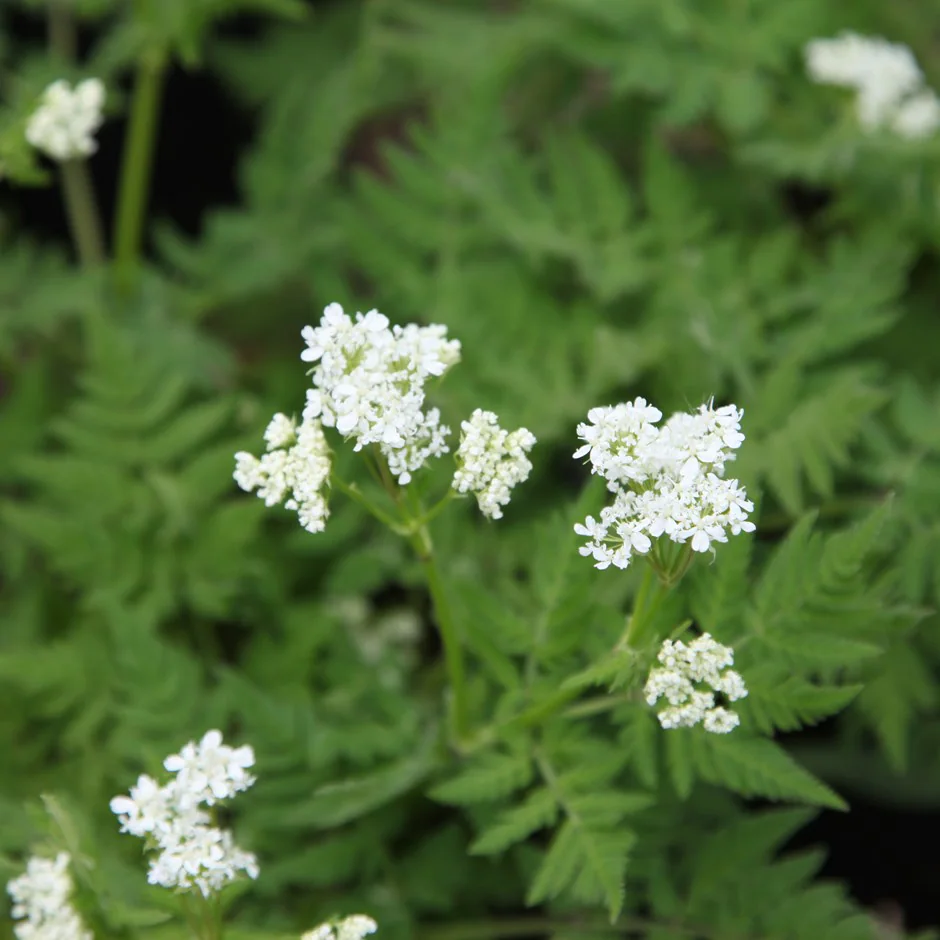

Wild Life
Abbreviation
CN: Common NameBN: Botanical Name
| 1 | 2 | 3 | 4 | 5 |
| 1 | 2 | 3 |

CN: White Dead-nettle, 短柄野芝麻 BN: Lamium album RHS inaturalist first-nature |

CN: cow parsley 'Ravenswing', 峨参 BN: Anthriscus sylvestris 'Ravenswing' RHS Gardenia Gardeners' World sarahraven |
|

CN: sweet cicely, 茉莉芹 BN: Myrrhis odorata totallywilduk RHS |
CN: Green alkanet, 绿朱草 BN: Pentaglottis sempervirens |

CN: Common Lungwort, soldiers and sailors, 肺草屬 BN: Pulmonaria officinalis |

CN: Cleavers, Goosegrass, sticky weed, 猪殃殃 BN: Galium aparine |
CN:ransoms, wild garlic, 野韭菜/熊葱/熊蒜 BN: Allium ursinum woodlandtrust |

CN: Creeping Buttercup BN: Ranunculus repens RHS |

CN: horsetail, 杉菜 BN: Equisetum arvense |

CN: common stinging nettle, 异株荨麻 BN: Urtica dioica RHS Gardeners' World - 10 uses for nettles wildlifetrusts |
CN: bindweed BN: Calystegia sepium |

CN: Lesser celandine, 毛茛科-小白屈菜 BN: Ficaria verna RHS Gardeners' World woodlandtrust |

CN: bank thistle BN: Cirsium vulgare |

CN: Dandelion, 蒲公英 BN: Taraxacum officinale agg. RHS healthline |

CN: White Campion BN: Silene latifolia RHS naturescape wildlifetrusts |
CN: Red campion, 红色剪秋罗 BN: Silene dioica gardenersworld |
CN: Bramcle, 黑莓 BN: Rubus fruticosus woodlandtrust |
|
CN: 薊(jì )- thistles BN: Cirsium Link 1 |
CN: English bluebell BN:Hyacinthoides non-scripta gardenersworld |

CN: Spanish bluebells BN: Hyacinthoides hispanica gardenia |
CN: Rosebay willowherb, fireweed - 柳兰 BN: Chamaenerion angustifolium Link 1 |

CN: Common Field-speedwell, 阿拉伯婆婆纳 BN: Veronica persica ukwildflowers |
|
CN: Yellow archangel， 小野芝麻属 BN: Lamium galeobdolon plantlife |
CN: cow parsley -峨参 BN: Anthriscus sylvestris gardenersworld |
CN: marsh marigold, 沼泽金盏花 / 驴蹄草 BN: Caltha palustris gardenersworld |
CN: Japanese knotweed / 虎杖 BN: Fallopia japonica japaneseknotweedexpert |

CN: cat's ear, Australian cape weed, California dandelion， 猫儿菊 BN: Hypochaeris radicata RHS wildflower naturespot |